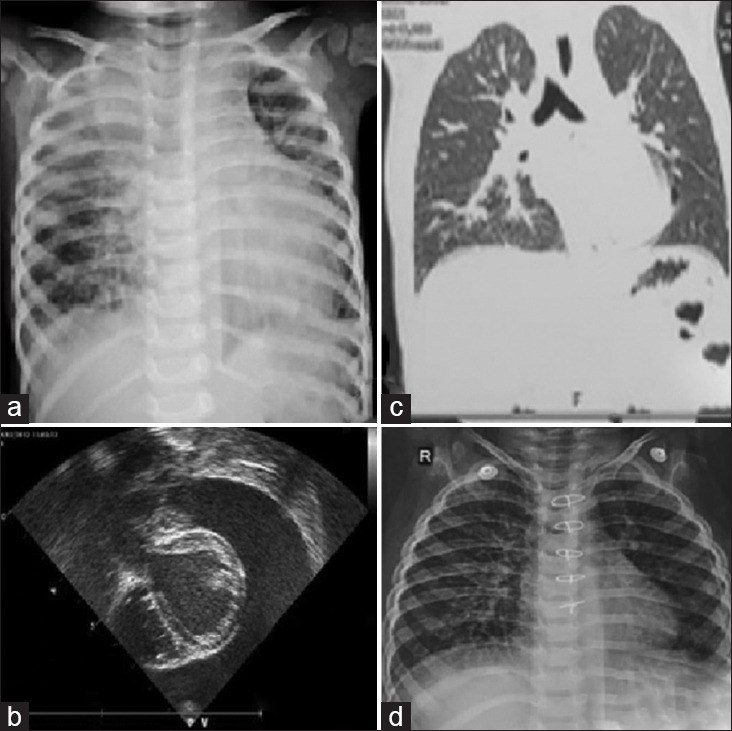
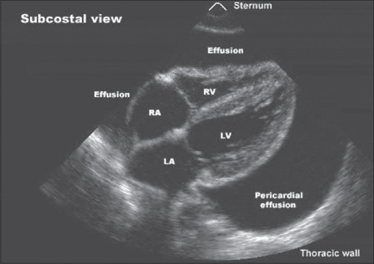

6157 — Tràn dưỡng trấp màng tim ở trẻ: chèn ép tim, DCMRL & khi nào nút ống ngực / Paediatric chylopericardium
Tags: pattern:tran-dich-mang-tim pattern:duong-trap pattern:chen-ep-tim pattern:ro-bach-mach vung:mang-tim vung:ong-nguc vung:trung-that protocol:sieu-am-tim protocol:CT protocol:MRI protocol:DCMRL score:TG-dich
Mức chắc chắn (certainty): tổng hợp y văn (literature synthesis) — biên từ toàn văn/abstract: 2 ca nhi có kết cục trái ngược (PMC10243652), ca nhi được mở cửa sổ màng tim qua nội soi lồng ngực (PMC11192247), phân tích gộp 98 bệnh nhân chylopericardium (PMC10423526), giá trị HU trên CT so với 38 ca tràn dịch khác loại (PMC9912497), 56 bệnh nhân phân độ MRL không cản quang (PMC11320522), 55 bệnh nhân CT lymphangiography + xạ hình (PMC11350940), ca DCMRL + nút ống ngực (PMC11233947). Không có ca do nhóm tự chụp.
Câu hỏi thực hành: bé trai 2,5 tuổi (9,8 kg), khó thở tăng dần 2 tuần, tim nhịp nhanh, tiếng tim mờ, X-quang tim to; siêu âm tràn dịch màng tim lượng nhiều, dấu hiệu chèn ép tim sớm; chọc hút ra 300 mL dịch trắng đục như sữa. Bác sĩ hỏi: "Dịch sữa này là gì? Có phải mổ ngay không? Nếu mổ thì mổ gì?" Bài chốt năm quyết định: (1) "dịch sữa" chỉ là dưỡng trấp khi triglyceride rất cao và cholesterol/triglyceride < 1 — đừng nhầm dịch mủ hoặc dịch giả dưỡng trấp; (2) đậm độ CT thấp (chylopericardium ~11 HU, thấp hơn hydropericardium 15,4 và hemopericardium 22,3 HU) là gợi ý trước khi chọc; (3) chèn ép tim gặp 38% ca chylopericardium — chọc giải áp là bước đầu, không phải điều trị triệt để; (4) 58–71% ca idiopathic cuối cùng phải mổ, và mổ chỉ có cửa sổ màng tim thường thất bại — ca 1 đã thất bại 2 lần và tử vong; (5) không kéo dài điều trị nội khoa quá 2–3 tuần — trẻ mất dịch, protein và lympho mỗi ngày.
1. Tổng quan bệnh học – cơ chế hình ảnh: vì sao dưỡng trấp vào màng tim và vì sao nó "nhẹ" trên CT
1.1 Dưỡng trấp là gì và đi đâu
- Dưỡng trấp (chyle) là dịch bạch mạch từ ruột: nhũ tương lipid (chylomicron) trong dịch giàu protein và lympho T, do ống ngực dẫn từ bể dưỡng trấp (cisterna chyli) lên góc tĩnh mạch cảnh–dưới đòn trái. Người lớn sản xuất 2–4 L/ngày; trẻ nhỏ ít hơn theo cân nặng nhưng tỉ lệ dịch/khối lượng cơ thể cao hơn — nên mất dưỡng trấp ở trẻ nhanh dẫn tới giảm albumin, giảm lympho, suy dinh dưỡng.
- Bốn cơ chế dẫn tới tràn dưỡng trấp màng tim (PMC9912497):
- Van bạch mạch hỏng ở các nhánh nối ống ngực ↔ mạch bạch mạch màng tim;
- Tăng áp lực ống ngực (giãn bạch mạch, tắc nghẽn, hẹp);
- Thông nối bất thường giữa mạch bạch mạch và màng tim (chylous reflux);
- Dị dạng bẩm sinh (lymphangiomatosis, lymphangioma trung thất).
- Nguyên nhân: vô căn (idiopathic) ~60% ở người lớn; thể thứ phát gặp sau mổ tim–lồng ngực, chấn thương, huyết khối tĩnh mạch cảnh, xạ trị, u trung thất/lymphoma, lao, viêm tụy hoại tử (PMC10423526). Ở trẻ, phần lớn là sau mổ tim hoặc dị dạng bạch mạch bẩm sinh; thể nguyên phát (primary) rất hiếm — chỉ ~104 ca trong 65 năm (PMC9912497).
1.2 TẠI SAO dịch "trắng như sữa" và TẠI SAO đậm độ CT lại thấp
- Màu trắng đục: các chylomicron (hạt lipid ~0,1–1 µm) tán xạ ánh sáng (hiệu ứng Tyndall) — giống sữa pha loãng; để lắng qua đêm sẽ tạo lớp kem (cream layer) phía trên.
- TẠI SAO HU thấp: lipid là hydrocarbon (ít electron hơn nước) → mô mỡ thuần có đậm độ −50 đến −100 HU. Dưỡng trấp là nhũ tương lipid pha loãng trong nước nên đậm độ nằm giữa mỡ và nước: ca người lớn đo được 11,0 HU; ca sơ sinh 7 tháng báo +6 đến −6 HU; dịch dưỡng trấp ổ bụng 7–10 HU (PMC9912497). So sánh cùng cơ sở: hydropericardium 15,39 HU, hemopericardium 22,32 HU — nghĩa là càng nhiều lipid, HU càng thấp; máu làm HU tăng.
- TẠI SAO dịch giàu lympho và protein: ống ngực mang lympho T và protein huyết tương; ca trẻ có protein 6–6,6 g/dL, lympho 86–90%, tế bào 2.300–3.500/mm³ (PMC10243652) — đây là lý do dịch dưỡng trấp không phải transudate đơn thuần và việc mất dịch gây suy giảm miễn dịch thứ phát.
1.3 TẠI SAO trẻ có thể chèn ép tim với lượng dịch "không lớn"
- Áp lực màng tim = áp lực dịch − áp lực trong buồng tim. Trẻ có màng tim mỏng, ít mô mỡ, thể tích dự trữ nhỏ, và nếu dịch tích tụ nhanh (rò hoạt động) thì áp lực tăng vọt trước khi lượng dịch lớn. Vì thế chèn ép tim gặp 38% ca chylopericardium, dù nhiều ca chỉ có tràn dịch "trung bình" (PMC10423526).
- TẠI SAO chèn ép là cấp cứu: tim không giãn được trong thì tâm trương → giảm đổ đầy thất phải → giảm cung lượng → sốc. Trên siêu âm: sụp nhĩ phải thì tâm thu, sụp thất phải thì tâm trương, tĩnh mạch chủ dưới giãn > 20 mm và biến thiên < 50%**, **vận tốc dòng chảy qua van hai lá giảm > 25–30% khi hít vào, qua van ba lá tăng > 40–60% (PMC12985857).
- TẠI SAO dưỡng trấp gây xơ màng tim về sau: lipid và protein trong khoang màng tim kích thích viêm mạn → dày–xơ màng tim, chèn ép mạn (constrictive pericarditis); đó là lý do phải theo dõi dài hạn chứ không chỉ lo lúc cấp.
1.4 Con số nằm lòng
- Dịch màng tim dưỡng trấp — đặc điểm chung (98 bệnh nhân, 95 bài): tuổi trung bình 37 ± 15, nam 55%, vô căn 60%, chèn ép tim 38%, phân tích dịch được làm 94%, lymphangiography tìm ra chỗ rò 59%, điều trị nội khoa 63%, 32% phải mổ, tái phát 16% trong trung vị 180 ngày, 10% trong số tái phát phải nhập viện lại (PMC10423526).
- Thể vô căn (102 bệnh nhân): 62 điều trị nội khoa, 36 (58%) trong số đó phải mổ; 71,2% tổng số được mổ; thủ thuật phổ biến: mở cửa sổ màng tim 48,1%, buộc ống ngực 44,2% (PMC9912497).
- Tiêu chuẩn dịch (PMC10243652, PMC9912497): triglyceride 110–2.000 mg/dL (nhiều tác giả lấy > 500 mg/dL khi dịch đục như sữa); cholesterol/triglyceride < 1; Sudan III dương tính; lympho chiếm ưu thế; cấy và tế bào học âm tính.
- Đậm độ CT: chylopericardium 11,0 HU; hydropericardium 15,39 HU; hemopericardium 22,32 HU; dưỡng trấp ổ bụng 7–10 HU (PMC9912497).
- Hai ca nhi (PMC10243652):
- Bé trai 2,5 tuổi: chọc 300 mL, triglyceride 2.748 mg/dL, cholesterol 36 mg/dL, lympho 86%; thất bại nội khoa → buộc ống ngực + cửa sổ màng tim (ngày 14), tái rò → cắt màng tim + cửa sổ màng tim–ổ bụng (ngày 35), tử vong ngày 58 do nhiễm khuẩn.
- Bé gái 13 tháng: chọc 210 mL, triglyceride 2.303 mg/dL, cholesterol 11 mg/dL, lympho 90%; thất bại nội khoa sau ~2 tuần → cắt màng tim + cửa sổ màng tim–ổ bụng (không buộc ống ngực), khỏi, 12 tháng sau tăng trưởng bình thường.
2. Mẫu hình + chẩn đoán phân biệt theo cơ chế và hình ảnh (Gamut)
- Theo cơ chế:
- Nguyên phát/vô căn (idiopathic): trẻ khỏe trước đó, tràn dịch đơn độc, không có u/dị dạng thấy được trên CT — chẩn đoán loại trừ.
- Thứ phát sau mổ tim: xuất hiện vài ngày–vài tuần sau phẫu thuật, thường kèm tràn dưỡng trấp màng phổi; ổ rò ở chỗ nối ống ngực – tĩnh mạch cảnh trái hoặc nhánh bạch mạch màng tim.
- Do dị dạng bạch mạch: lymphangioma trung thất, lymphangiomatosis đa ổ (đa ổ → tiên lượng nặng, cần điều trị toàn thân).
- Do tắc nghẽn dòng bạch mạch: huyết khối tĩnh mạch cảnh/ống ngực, u trung thất chèn, xạ trị.
- Theo hình ảnh:
- Tràn dịch đơn độc (màng tim là nơi duy nhất) — hay gặp thể vô căn;
- Tràn dịch + tràn dưỡng trấp màng phổi — gợi ý tổn thương ống ngực đoạn ngực;
- Tràn dịch + khối/dị dạng trung thất (nang bạch mạch, lymphangioma) — thấy trên CT/MRI.
- Chẩn đoán phân biệt của "dịch màng tim đục như sữa":
- Dưỡng trấp: triglyceride rất cao, cholesterol/triglyceride < 1, Sudan III (+), lớp kem khi để lắng.
- Dịch giả dưỡng trấp (pseudochylous): do lao, viêm khớp dạng thấp, xơ hóa màng tim — cholesterol cao, triglyceride thấp, có tinh thể cholesterol, không có lớp kem.
- Dịch mủ (purulent): đục, neutrophil ưu thế, cấy (+), glucose thấp, LDH rất cao.
- Dịch dưỡng trấp pha loãng do nuôi ăn: triglyceride có thể thấp giả nếu trẻ nhịn ăn kéo dài — phải cho ăn béo trước khi chọc lại nếu nghi ngờ.
3. Bảng so sánh phân biệt (ma trận đối chiếu)
| Thực thể (entity) | Hình ảnh điển hình | Chốt vào (rule-in) | Chốt loại (rule-out) | Gợi ý xác nhận |
|---|---|---|---|---|
| Tràn dưỡng trấp màng tim (nguyên phát) | Tràn dịch màng tim đơn độc; CT 11 HU (thấp hơn dịch khác); không khối trung thất | Dịch sữa + TG rất cao + chol/TG < 1 + lympho ưu thế | TG thấp + cholesterol cao + tinh thể cholesterol → giả dưỡng trấp | Chọc hút + phân tích dịch; CT; DCMRL tìm rò |
| Tràn dưỡng trấp sau mổ tim | Tràn dịch xuất hiện vài ngày–vài tuần sau mổ, thường kèm tràn dịch màng phổi | Tiền sử mổ tim + dịch sữa + ổ rò vùng góc tĩnh mạch cảnh trái | Không tiền sử mổ, không rò → thể vô căn | DCMRL/CTL; theo dõi lưu lượng dẫn lưu |
| Dịch giả dưỡng trấp | Tràn dịch mạn, có thể dày màng tim | Cholesterol cao, triglyceride thấp, tinh thể cholesterol | TG rất cao + lớp kem → dưỡng trấp thật | Xét nghiệm dịch; tìm lao/viêm khớp |
| Tràn mủ màng tim | Dịch đục, dày màng tim, có thể khí | Neutrophil ưu thế + cấy (+) + glucose thấp | Lympho ưu thế, cấy âm → không mủ | Cấy máu/dịch; PCR lao |
| Máu màng tim (hemopericardium) | HU 40–60 hoặc cao hơn; có thể mức dịch–máu | HU cao + hematocrit dịch ≈ máu | HU thấp < 15 → không phải máu tươi | CT; siêu âm; chọc |
| Tràn thanh dịch (hydropericardium) | HU 0–20 (trung bình 15,4); dịch trong | Dịch trong, protein thấp, TG thấp | Dịch sữa + TG cao → không phải thanh dịch | Chọc hút; siêu âm |
| Lymphangioma/dị dạng bạch mạch trung thất | Khối T2 rất sáng, không ngấm thuốc, nhiều nang; có thể đa ổ | Nang nhiều vách + T2 sáng + không ngấm | Tràn dịch tự do, không nang → không phải dị dạng | MRI; DCMRL; sinh thiết nếu cần |

Cùng một bệnh nhi: (a) X-quang bóng tim to (hình "bình nước"); (b) siêu âm thấy khoảng dịch lớn quanh tim, tim "lắc" trong dịch; (c) HRCT xác nhận tràn dịch màng tim và loại trừ khối trung thất; (d) sau mổ + cửa sổ màng tim–ổ bụng, phim theo dõi bóng tim trở về bình thường. Nguồn: Ann Pediatr Cardiol 2023, Fig. 1, PMC10243652, CC BY-NC-SA 4.0 (nguyên bản).4. Protocol chẩn đoán–điều trị + phân độ
4.1 Thứ tự chẩn đoán
- Siêu âm tim tại giường (bắt buộc đầu tiên): lượng dịch, vị trí, dấu hiệu chèn ép — sụp nhĩ phải (nhạy, đặc biệt khi sụp > 1/3 chu chuyển), sụp thất phải thì tâm trương (đặc hiệu), tĩnh mạch chủ dưới > 20 mm, biến thiên < 50%**, **E hai lá giảm > 25–30% khi hít vào, E ba lá tăng > 40–60%, đảo dòng tâm trương tĩnh mạch gan (PPV 82%, NPV 88%) (PMC12985857).
- Chọc hút màng tim (pericardiocentesis) — vừa giải áp vừa chẩn đoán: gửi triglyceride, cholesterol, protein, LDH, glucose, tế bào + loại tế bào, Sudan III, cấy, AFB/PCR lao, tế bào học. Đây là tiêu chuẩn vàng (94% ca trong phân tích gộp được phân tích dịch).
- CT ngực không cản quang + cản quang: đo HU dịch (gợi ý dưỡng trấp nếu < 15 HU, đặc biệt < 11), tìm khối/dị dạng trung thất, hạch, giãn ống ngực, và biến chứng (dày màng tim, xẹp phổi).
- MRI ngực: khối bạch mạch T2 rất sáng, không ngấm thuốc; đánh giá mô mềm trung thất.
- Hình ảnh bạch mạch chuyên biệt (khi cân nhắc can thiệp):
- DCMRL (dynamic contrast-enhanced MR lymphangiography): chọc hạch bẹn hai bên, tiêm contrast, chụp 30 giây/phìa trong 30 phút; chỗ rò thường thấy ở phút 20 (PMC11233947);
- CT lymphangiography (CTL): ống ngực giãn > 3 mm là bất thường; phối hợp 99mTc-DX lymphoscintigraphy phân 3 type (12/14/22 bệnh nhân) (PMC11350940);
- MRL không cản quang: phân 4 type theo mức bất thường bạch mạch cổ–ngực; type I–II (39,2%) mổ tốt hơn type III–IV, giãn thân phế quản–trung thất là yếu tố độc lập (OR 11,10) (PMC11320522).
4.2 Điều trị theo bậc thang
- Bậc 1 — nội khoa (2–3 tuần, không lâu hơn):
- Nhịn ăn 48–72 giờ, sau đó diet MCT (medium-chain triglyceride) — MCT hấp thu thẳng vào tĩnh mạch cửa, không đi qua bạch mạch;
- TPN + bù albumin; theo dõi điện giải, cân nặng, lympho;
- Octreotide khởi đầu 1–3 µg/kg/giờ, tăng 0,5 µg/kg/giờ mỗi 24 giờ tới 5 µg/kg/giờ nếu còn rò 80–100 mL/ngày (PMC10243652); sau ổn định chuyển tiêm dưới da, giảm dần trong 3 tháng.
- Bậc 2 — can thiệp bạch mạch qua da: khi DCMRL/CTL thấy chỗ rò khu trú → nút ống ngực bằng coil + keo (glue); thành công ở ca người lớn sau ghép tim, không tái phát sau 3 tháng (PMC11233947). Ít xâm lấn hơn mổ, nhưng không thay thế được khi rò lan tỏa/dị dạng.
- Bậc 3 — mổ: các lựa chọn buộc ống ngực, cắt màng tim, cửa sổ màng tim–màng phổi, cửa sổ màng tim–ổ bụng (pericardioperitoneal window), shunt màng tim–phúc mạc, mở cửa sổ qua nội soi lồng ngực (PMC10243652, PMC11192247).
- Bài học từ 2 ca: buộc ống ngực + cửa sổ màng tim–màng phổi đơn thuần có thể thất bại (ca 1 tái rò); cửa sổ màng tim–ổ bụng là đường thoát bền vững hơn vì chênh áp ổ bụng–màng tim thấp và dịch được hấp thu qua phúc mạc.
- Theo dõi sau điều trị: siêu âm tim hàng tháng trong 3–6 tháng đầu, sau đó mỗi 3–6 tháng tới 1 năm; X-quang ngực; theo dõi tái phát 16% và chèn ép mạn (dày màng tim, vôi hóa); cân nặng–chiều cao và công thức máu/lympho.
flowchart TD
A[Trẻ tràn dịch màng tim lượng nhiều] --> B[Siêu âm tim: có chèn ép?]
B -->|Có| C[Chọc giải áp cấp cứu]
B -->|Không| D[Chọc hút chẩn đoán]
C --> D
D --> E{Dịch sữa và TG rất cao, chol/TG dưới 1}
E -->|Không| F[Loại trừ mủ, lao, giả dưỡng trấp, máu]
E -->|Có| G[Nhịn ăn 48-72 giờ, MCT, TPN, octreotide]
G --> H{Còn rò sau 2-3 tuần}
H -->|Không| I[Theo dõi siêu âm hàng tháng]
H -->|Có| J[DCMRL hoặc CTL tìm chỗ rò]
J -->|Rò khu trú| K[Nút ống ngực coil và keo]
J -->|Rò lan tỏa hoặc dị dạng| L[Mổ: buộc ống ngực, cắt màng tim, cửa sổ màng tim - ổ bụng]
K --> I
L --> I
I --> M{Tái phát hoặc dày màng tim}
M -->|Có| J
M -->|Không| N[Kết thúc theo dõi sau 1 năm]
 DCMRL (MIP sagittal, ca người lớn sau ghép tim): ống ngực (mũi tên) và dưỡng trấp trào ngược/rò vào khoảng quanh mạch và màng tim (đầu mũi tên). Đây là bản đồ để chọn nút ống ngực bằng coil + keo. Nguồn: JACC Case Rep 2024, Fig. 3, PMC11233947, CC BY 4.0 (nguyên bản).
DCMRL (MIP sagittal, ca người lớn sau ghép tim): ống ngực (mũi tên) và dưỡng trấp trào ngược/rò vào khoảng quanh mạch và màng tim (đầu mũi tên). Đây là bản đồ để chọn nút ống ngực bằng coil + keo. Nguồn: JACC Case Rep 2024, Fig. 3, PMC11233947, CC BY 4.0 (nguyên bản).
5. Biến thể bình thường và cạm bẫy
- "Dịch sữa" không đồng nghĩa dưỡng trấp: dịch mủ do tụ cầu, dịch giả dưỡng trấp do lao/viêm khớp, và dịch của tràn dịch do nuôi ăn nhân tạo đều có thể đục. Chốt bằng TG + chol/TG + Sudan III + loại tế bào, không bằng mắt.
- TG thấp giả khi trẻ đã nhịn ăn: dưỡng trấp hình thành sau bữa ăn béo; nếu đã NPO nhiều ngày, TG có thể không cao. Nếu nghi ngờ, cho bữa ăn giàu mỡ rồi chọc lại (khi an toàn).
- HU thấp không đặc hiệu: dịch thanh dịch cũng 0–20 HU; chỉ số HU giúp gợi ý, không thay thế phân tích dịch. Ngược lại, HU cao loại trừ dưỡng trấp.
- Bỏ sót chỗ rò trên hình ảnh bạch mạch: lymphangiography chỉ tìm được 59% (PMC10423526); DCMRL âm không loại trừ — có thể do rò ngắt quãng, chèn ép làm tắc tạm, hoặc thể vô căn.
- Buộc ống ngực đơn thuần thất bại: đã ghi nhận ca tái rò sau buộc + cửa sổ màng tim–màng phổi; cần cửa sổ màng tim–ổ bụng hoặc cắt màng tim khi rò lan tỏa/dị dạng.
- Chọc hút nhiều lần làm mất dịch–protein–lympho: ở trẻ, mỗi 100 mL dịch mất ~6 g protein; phải bù albumin, TPN và không hút áp lực âm mạnh (làm tăng lưu lượng rò).
- Bỏ qua chèn ép mạn: dưỡng trấp gây viêm–xơ màng tim; trẻ có thể "hết tràn dịch" nhưng vẫn khó thở khi gắng sức do màng tim dày — cần MRI/CT đánh giá màng tim và theo dõi dài hạn.
- Tưởng là "tràn dịch sau mổ tim thông thường": tràn dịch sau mổ thường tự hết; nếu dịch đục, tái phát nhanh, lưu lượng dẫn lưu > 100 mL/ngày kéo dài, phải xét nghiệm triglyceride chứ không chỉ siêu âm.
6. Tự lượng giá — Blind Quiz
Ca 1 — Bé trai 2,5 tuổi, khó thở 2 tuần, tim to trên X-quang.
- Gợi ý: không sốt, không tiền sử mổ, chọc ra dịch trắng đục.
- Câu hỏi: (1) Ba nguyên nhân của dịch màng tim đục ở trẻ? (2) Xét nghiệm nào chốt dưỡng trấp? (3) Vì sao siêu âm là bước đầu tiên?
Bấm để hiện đáp án (findings + chẩn đoán)
- Findings: bóng tim to, khoảng dịch lớn quanh tim, phổi ít ứ huyết; CT xác nhận dịch màng tim, không khối trung thất.
- Ba nguyên nhân: dưỡng trấp (TG rất cao, chol/TG < 1), mủ (neutrophil ưu thế, cấy +), giả dưỡng trấp (cholesterol cao, TG thấp, tinh thể cholesterol).
- Chốt: triglyceride dịch rất cao (ca này 2.748 mg/dL) + cholesterol/triglyceride < 1 + Sudan III (+) + lympho 86–90%.
- Vì sao siêu âm trước: tại giường, phát hiện chèn ép tim để chọc giải áp ngay; CT/MRI chỉ bổ sung sau.
- Nguồn ảnh: Ann Pediatr Cardiol 2023, Fig. 1, PMC10243652, CC BY-NC-SA 4.0.
Ca 2 — Bé gái 13 tháng, tràn dịch màng tim lượng nhiều, chèn ép sớm; dịch sữa.

- Gợi ý: không tiền sử chấn thương, không mổ; sau 2 tuần nội khoa vẫn rò 100–120 mL/ngày.
- Câu hỏi: (1) Kế hoạch điều trị bậc thang? (2) Khi nào dừng nội khoa? (3) Vì sao chọn cửa sổ màng tim–ổ bụng thay vì chỉ buộc ống ngực?
Bấm để hiện đáp án (findings + chẩn đoán)
- Bậc thang: chọc giải áp → NPO 48–72 giờ + MCT + TPN + octreotide 1–3 µg/kg/giờ; nếu còn rò sau 2–3 tuần → DCMRL/CTL rồi nút ống ngực hoặc mổ.
- Ngưỡng dừng nội khoa: không cải thiện lưu lượng rò sau 2–3 tuần, hoặc trẻ sụt cân, giảm albumin, giảm lympho — ca này 100–120 mL/ngày kéo dài 10 ngày là đủ chỉ định.
- Vì sao cửa sổ màng tim–ổ bụng: dịch được dẫn xuống ổ bụng và hấp thu qua phúc mạc, tránh tái tích trong màng tim; buộc ống ngực đơn thuần không xử lý được rò lan tỏa (ca 1 đã thất bại và tử vong).
- Nguồn ảnh: J Indian Assoc Pediatr Surg 2024, Fig. 1, PMC11192247, CC BY-NC-SA 4.0.
Ca 3 — Trẻ 4 tuổi sau mổ tim 10 ngày, tràn dịch màng tim tái phát nhanh, dịch đục; CT dịch 12 HU.
- Gợi ý: dẫn lưu ra 150 mL/ngày, không sốt, cấy dịch âm.
- Câu hỏi: (1) Nghĩ đến cơ chế nào? (2) CT 12 HU có ý nghĩa gì? (3) Bước tiếp theo nếu DCMRL thấy rò khu trú?
Bấm để hiện đáp án (findings + chẩn đoán)
- Cơ chế: tràn dưỡng trấp thứ phát sau mổ tim — tổn thương nhánh bạch mạch/ống ngực trong trường mổ, dưỡng trấp rò vào màng tim.
- 12 HU: thấp hơn dịch thanh dịch (15,4) và máu (22,3), phù hợp dịch giàu lipid — gợi ý dưỡng trấp nhưng phải xác nhận bằng triglyceride dịch.
- Nếu rò khu trú: nút ống ngực qua da bằng coil + keo dưới hướng dẫn DCMRL/lymphangiography; theo dõi siêu âm, nếu thất bại → cửa sổ màng tim–ổ bụng.
- Nguồn ảnh: JACC Case Rep 2024, Fig. 3, PMC11233947, CC BY 4.0.
Bài liên quan chéo
- 1855 – Khi DCMRL không có đích: LVA & chuyển hướng dòng ống ngực
- 1823 – Trametinib & dị dạng bạch mạch (RAS/MAPK)
- 6143 – Cách ly thanh–khí quản & hít sặc ở trẻ
- 043 – Chăm sóc hô hấp quanh mổ ở trẻ
- 600 – Tổng quan Nhi khoa
Ảnh
- Tên file theo quy ước
6157_slug_Modality_SourceID.jpg; nguồn + giấy phép từng ảnh trongimages/CREDITS.md. - Cả 3 ảnh là nguyên bản, không crop/không ghép (2 ảnh CC BY-NC-SA cho phép phái sinh nhưng giữ nguyên để không mất nhãn của tác giả; 1 ảnh CC BY).
Không dùng để chẩn đoán độc lập khi chưa có người hướng dẫn.